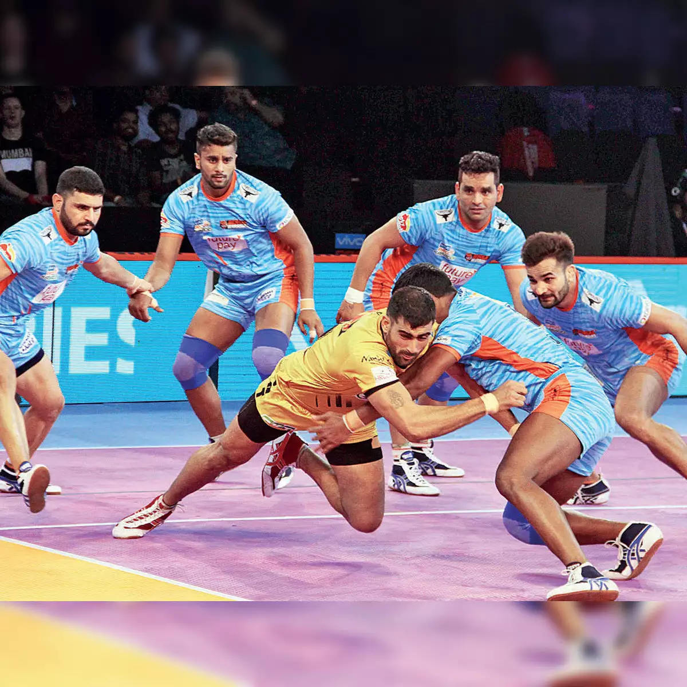
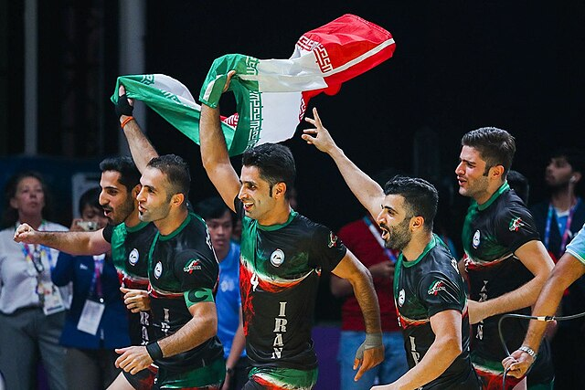
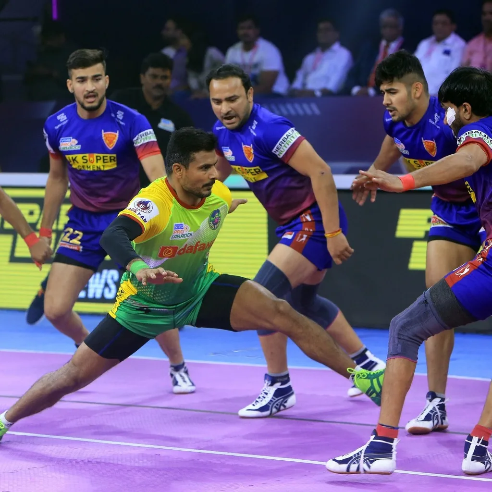
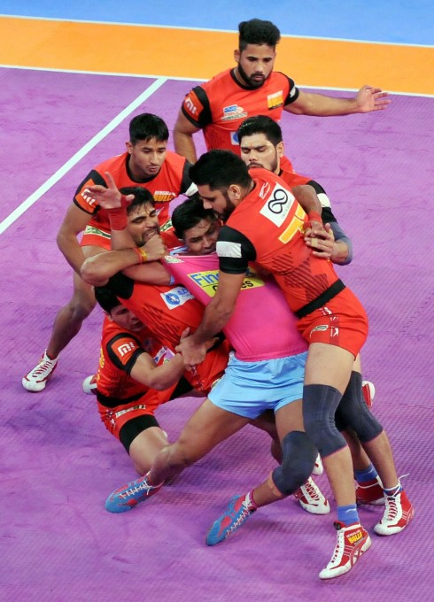
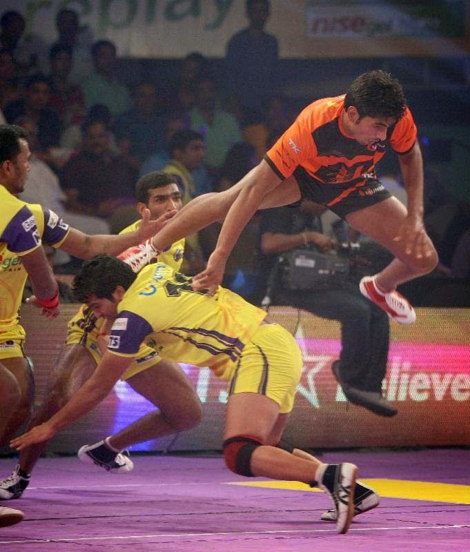

Kabaddi
Kabaddi is a traditional sport originating from India, renowned for its blend of physical prowess, strategy, and teamwork. Played by two teams, each consisting of seven players, the game involves a unique combination of tag and wrestling. During a match, one player from the attacking team, known as the "raider," enters the opponent's half of the field and attempts to tag as many defenders as possible while chanting "kabaddi, kabaddi" to prove that they are not taking a breath. The raider then tries to return to their side of the field without being tackled. The defending team's goal is to stop the raider by tagging or wrestling them to the ground. Points are awarded based on successful raids and tackles, and the team with the most points at the end of the game wins.

- Team Composition:
- Each team consists of seven players on the field, with up to five substitute players.
- Objective:
- The aim is to score points by raiding the opponent's half and tagging defenders while chanting "kabaddi."
- Gameplay:
- The game is played in two halves, usually of 20 minutes each, with a brief halftime break.
- Raid:
- A player from the attacking team (raider) enters the opponent’s half and attempts to tag defenders.
- The raider must continuously chant "kabaddi, kabaddi" without taking a breath.
- Defending:
- The defending team tries to stop the raider by tagging or wrestling them down.
- Defenders must avoid crossing the center line.
- Scoring Points:
- Points are awarded to the raiding team if the raider successfully returns to their half after tagging defenders.
- Points are awarded to the defending team if they successfully tackle the raider before they return.
- Returning to Own Half:
- The raider must return to their own half within a set time (usually 30 seconds) to score points.
- Team Turnovers:
- Teams switch roles between offense and defense after each raid or when a point is scored.
- Fouls and Penalties:
- Violations such as crossing the center line by defenders or taking a breath by the raider result in penalties.
- Persistent fouling can lead to suspension of players.
- Substitution:
- Teams can substitute players during stoppages in play.
- Winning:
- The team with the most points at the end of the game wins.
- Technical and Tactical Play:
- Strategies include raiding in groups, using quick movements, and employing defensive formations to counter raids effectively.





Know More